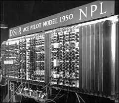
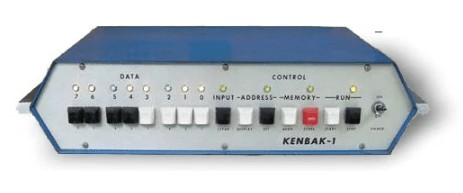
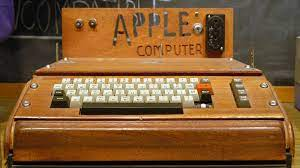
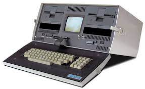

Nos últimos anos a tecnologia vem aumentando cada vez mais, isso aconteceu principalmente nos últimos dez anos, mas uma coisa é certa esse avanço ajudou e muito no nosso dia a dia, trazendo soluções inovadores, incluindo a preocupação com a saúde e meio ambiente, mas nem sempre foi assim.

Esse era o ENIAC o primeiro computador eletrônico construído, mas foi usado por apenas dez anos, sua capacidade de cálculo era tão avançada que, nesse período fez mais cálculos que toda a humanidade em toda a história.

O NPL Pilot Ace foi considerado o primeiro computador com múltiplos propósitos, ou seja, era possível inserir informações e resolver.

O Kenbak-1 foi considerado o primeiro computador pessoal, mas com o fracasso o seu fracasso comercial fez a empresa que o produziu fechar as portas.

A partir de 1976 foram lançados o Apple-1 e Apple-2 em 1977

Em 1981 foi lançado o primeiro computador portátil Osborne-1
Nos dias de hoje possuimos as mais diferentes marcas de computadores e eletrônicos, mostrando o avanço tecnológico.